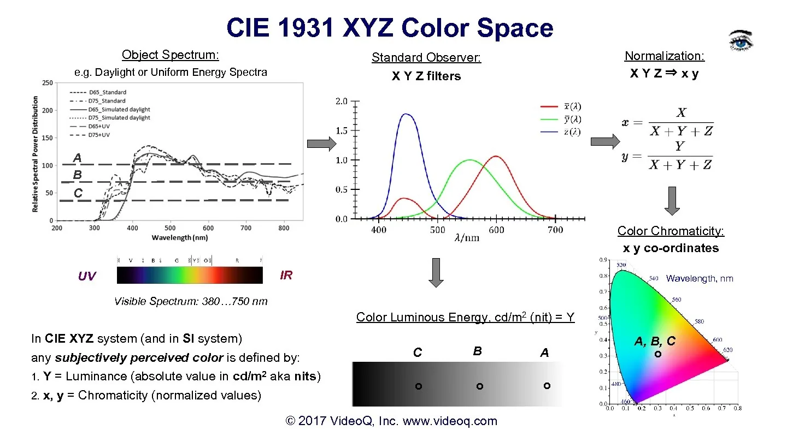

XYZ
1931 年 XYZ 颜色匹配函数是 1931 年 RGB 颜色匹配函数的线性变换，以便赋予它们一些数学上的便利性质。事实上，我们一直在讨论的 RGB CMFs 在实用色度学中大部分未被使用。现代色域是用 XYZ 来定义的。[1]
其实RGB和LMS都可以通过线性变换得到XYZ。LMS 中，人眼的三种视锥细胞的响应值是归一化过的，所以LMS的色彩空间中每个维度的大小都是0到1。三种视锥细胞的真实的响应函数是这样的[2]。

XYZ color matching functions, CIE 1931 and Stockman and Sharpe 2006.[2,3]
可以看到，上图中的蓝色响应函数的最大值很大，如果它被标准化到 1，相比红色和绿色而言会有很多的颜色被压缩。所以 XYZ 把 LMS 的蓝色维度保持不变，保持了三种响应函数彼此的一个比例关系，从而让色彩空间看起来更加“舒展”，这样如果后续需要进行抽样，可以更均衡的表示各种颜色。
$$
\begin{bmatrix} X \\ Y \\ Z \end{bmatrix}
=
\begin{bmatrix}
1.91020 & -1.11212 & 0.20191 \\
0.37095 & 0.62905 & 0 \\
0 & 0 & 1.00000
\end{bmatrix}
\begin{bmatrix} L \\ M \\ S \end{bmatrix}_{\mathrm{HPE}}
$$
[4]
其实 XYZ 的提出要早于 LMS！上面的内容其实是从实用主义的角度往回推导。从另一个角度想，其实 XYZ 也给 LMS 提供了科学依据，因为 LMS 从细胞的角度进行了精确的测量。
综上，XYZ相对于LMS提供了更精细的颜色，相对于RGB消除了负数的影响，但其实他们三个都可以通过线性变换进行统一（要求在RGB非负的色域内，因为XYZ和LMS对应的是全部颜色，有的RGB不能表示）。
Reference
- https://medium.com/hipster-color-science/a-beginners-guide-to-colorimetry-401f1830b65a
- https://en.wikipedia.org/wiki/CIE_1931_color_space
- https://present5.com/victor-steinberg-video-standards-signals-formats-and-interfaces-2/
- https://wikimedia.org/api/rest_v1/media/math/render/svg/4a15573a77cd48decc68aada921e4ff01a6d24e2